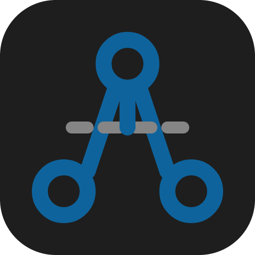

NetDebugger
─
□
✕
+ 分组
+ 连接
跟随系统
浅色
深色
NetDebugger
选择一个连接开始调试
客户端:
×
目标:
Enter 发送
Ctrl+Enter 发送
新建分组
取消
确定
新建连接
名称:
分组:
协议:
WebSocket
角色:
服务端
客户端
监听端口:
Endpoint 路径（留空则接受所有路径）
添加
目标地址:
Endpoint 路径:
取消
确定
通用
关于
通用设置
关闭后最小化到系统托盘
关于
NetDebugger
版本
-
作者
zz
跨平台网络协议调试器，当前以 WebSocket 调试为主。支持 WS 服务端/客户端模拟、多 endpoint 路径路由、消息时间线、消息搜索与高亮、按 endpoint 未读角标、消息历史持久化等功能。
确认关闭
确定要关闭程序吗？
关闭后最小化到系统托盘
取消
确认关闭
取消
确定
取消
确定